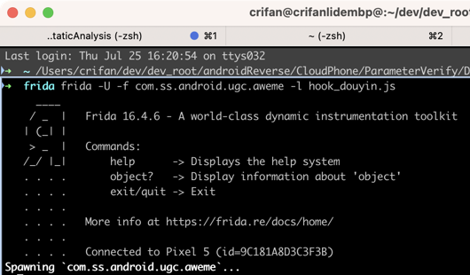
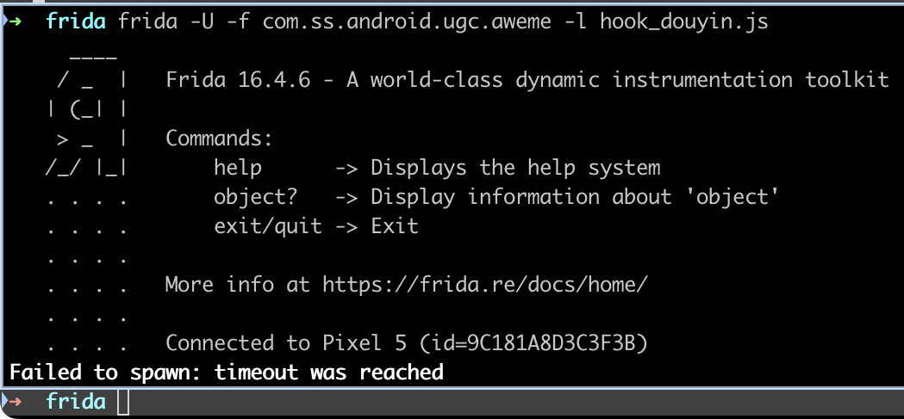
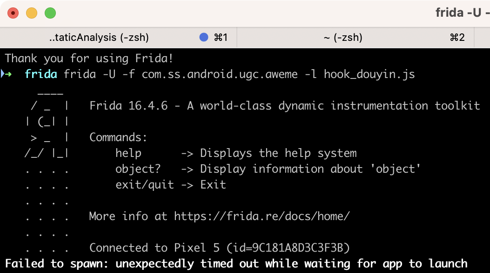

卡死在Spawning
- 现象：frida去hook时，一直显示=卡死在
Spawning➜ frida frida -U -f com.ss.android.ugc.aweme -l hook_douyin.js ____ / _ | Frida 16.4.6 - A world-class dynamic instrumentation toolkit | (_| | > _ | Commands: /_/ |_| help -> Displays the help system . . . . object? -> Display information about 'object' . . . . exit/quit -> Exit . . . . . . . . More info at https://frida.re/docs/home/ . . . . . . . . Connected to Pixel 5 (id=9C181A8D3C3F3B) Spawning `com.ss.android.ugc.aweme`...- 
- -> 当时的错误操作：以为真的卡死了，所以去找别的可能的原因，所以就去直接用
Ctrl+C中断运行了
- 原因：其实并没有卡死，而是多等会，会有最终结果
- 是超时报错，还是能正常运行
- 解决办法：多等一会，看看最终的结果
结果1：正常
结果1：正常继续hook和输出log
➜ frida frida -U -f com.ss.android.ugc.aweme -l hook_douyin.js
...
Spawning `com.ss.android.ugc.aweme`...
Java is available
Java.androidVersion=13
Spawned `com.ss.android.ugc.aweme`. Resuming main thread!
[Pixel 5::com.ss.android.ugc.aweme ]->
- 解决办法：无需任何操作，只是稍微多等会
结果2：异常
结果1：报错超时等异常
情况1
➜ frida frida -U -f com.ss.android.ugc.aweme -l hook_douyin.js
...
. . . . Connected to Pixel 5 (id=9C181A8D3C3F3B)
Failed to spawn: timeout was reached

- 此处的背景
- 此处之前Frida的hook，触发输出太多log，自己强制输入（多次输入，因为输出log太多，都无法顺利输入）exit退出Frida后，然后不知道什么情况，总之是：导致了安卓端的Frida异常
- 解决办法：重启Android手机
情况2
➜ frida frida -U -f com.ss.android.ugc.aweme -l hook_douyin.js
...
. . . . Connected to Pixel 5 (id=9C181A8D3C3F3B)
Failed to spawn: unexpectedly timed out while waiting for app to launch

- 解决办法：多试试几次（有时候就正常了）